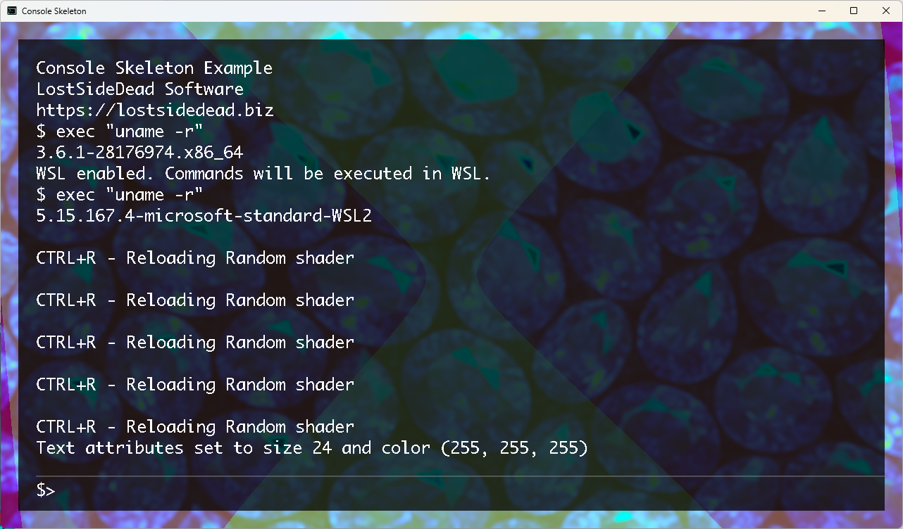

 Console Skeleton is an advanced OpenGL-based interactive console application that combines a powerful command-line interface with real-time visual effects. Built on the MX2 framework, it provides a fully-featured terminal emulator with customizable shaders, MXCMD script execution, and cross-platform compatibility including Windows WSL support.
The application follows a modular architecture with clear separation between the console interface (GLConsole),
the command execution engine (AstExecutor), and the rendering system (Game class).
The main components include:
| Command | Description |
|---|---|
random_shader |
Apply a random visual shader effect |
default_shader |
Reset to the default shader |
set_shader "path" |
Load a custom shader from file path |
wsl_on/wsl_off |
Enable/disable WSL command execution (Windows only) |
clear |
Clear the console output |
about |
Display application information |
help |
Show available commands |
@echo_on/@echo_off |
Control command echoing |
| Key Combination | Action |
|---|---|
Ctrl+R |
Apply random shader effect |
Ctrl+C |
Apply Command Interrupt |
Page Up/Down |
Scroll console output |
Up/Down Arrows |
Navigate command history |
Escape |
Close application |
# Basic console interaction
$ random_shader # Apply random visual effect
$ clear # Clear console
$ @echo_on # Enable command echoing
# MXCMD script execution
$ cmd "script.mxcmd" # Execute MXCMD script file
# WSL integration (Windows)
$ wsl_on # Enable WSL for commands
$ exec "ls -la" # Execute Linux commands via WSL
# Shader customization
$ set_shader "data/shaders/custom.glsl" # Load custom shader
$ default_shader # Reset to default
# clone the repository
# have libmx2 and other dependencies installed
# Build the project
cd cmd/build
cmake .. -DCMD=ON -DSHARED=ON -DCONSOLE=ON
cmake --build .
# Run the console
./cmd-console
# With custom parameters
./cmd-console -p /path/to/assets -r 1920x1080